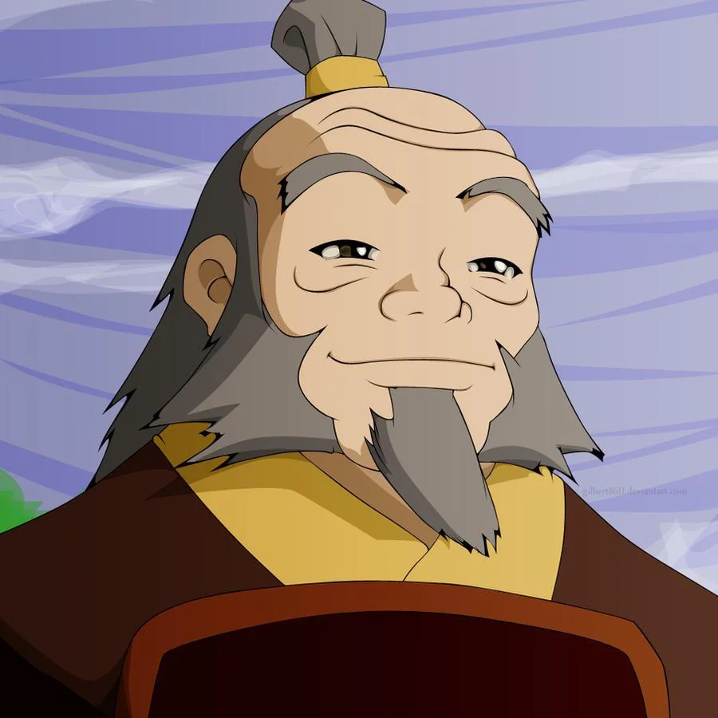
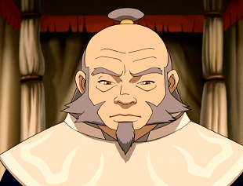

"Setelah saya merebut kembali Ba Sing Se, aku akan merebut kembali toko teh saya, dan saya akan bermain Pai Sho setiap hari!"
— Iroh untuk Tim Avatar di "Sozin's Comet, Part 2: The Old Masters".
Iroh adalah pensiunan jenderal Negara Api, mantan Pangeran Negara Api, Ketua dari Ordo Lotus Putih, Master Pengendali Api, dan mentor yang bijak bagi keponakannya, Raja Api Zuko. Iroh adalah anak dari Raja Api Azulon dan Ratu Api Ilah, kakak dari Raja Api Ozai, dan paman dari Azula. Kemampuannya yang sangat menakjubkan; nafas api dan pernyataan bahwa ia membunuh naga terakhir, membuat ia mendapat gelar kehormatan Naga dari Barat oleh Negara Api. Sebenarnya, Iroh bukan membunuh naga tersebut, tetapi ia belajar dari naga, dan merahasiakan keberadaan Ksatria Matahari Kuno.